Cognex Camera JOBFILE Descriptions and Use
This topic includes information about the Cognex camera JOBFILE and its use for the wash wheel, sample presentation unit (SPU), precision sample pipettor, and aliquot sample pipettor. For more information about cameras, see Camera System Functions Overview.
The System Automatically Loads the JOBFILE for a Camera
| Table of Contents |
|---|
| Wash Wheel |
| Sample Presentation Unit (SPU) |
| Precision Sample Pipettor |
| Aliquot Sample Pipettor |
Wash Wheel
| Cell | Intended Use | Function | Default Value | Example/Image | Being improved in future SW version? |
|---|---|---|---|---|---|
|
A2 |
RESET JOBFILE: Identifying the version of the job file associated with the SW and resetting the job file. |
1. Change cell 2. Restart the Machine Control App 3. Job file will be deployed again |
SW version 1.15 = 1.017 |
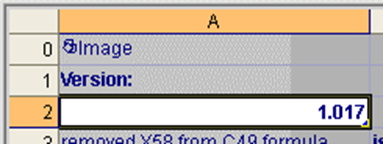 |
No |
|
H4 |
To change image brightness for calibration of Wash Wheel Dispense Volume if the tool edges cannot be found. NOTE: Must change value back to original after calibration with the tool |
Modify by 0.1 Higher: Increase brightness Lower: Decrease brightness |
0.500 |
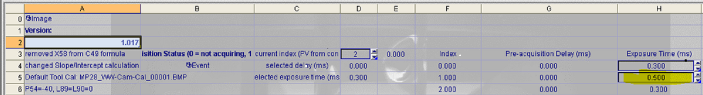 |
No |
|
H5 |
|||||
|
L71 |
If the bottom of the Wash Wheel Dispense Volume calibration tool is not found. |
Change Thresh Accept (double click into cell) from 3 to 2 |
3 |
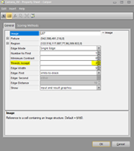 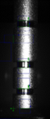 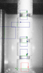 |
No |
|
L71 |
If the bottom of the Wash Wheel Dispense Volume calibration tool is not found after Thresh Accept adjustment. |
Increase Edge Width (double click into cell) Modify by 1 up to 8 |
5 |
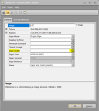 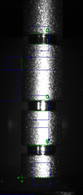 |
No |
|
P54 |
If the Wash Wheel Dispense Volume Calibration Tool Bottom Groove edges are not detected. |
Range: Bottom blue region of interest box is centered to cover all of bottom groove. Higher: Move region of interest up Lower: Move region of interest down |
-40 |
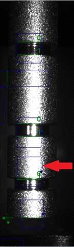 |
No |
|
L90 |
If the Wash Wheel Dispense Volume Calibration Tool Vertical Edge of the Wash Wheel Window is not found in the right location. This is to ensure the tool can be found properly. |
Higher: Move the region right Lower: Move the region left |
0 |
No |
|
|
L89 |
If the Wash Wheel Dispense Volume Calibration Tool Horizontal Edge of the Wash Wheel Window is not found in the right location. This is to ensure the tool can be found properly. |
Higher: Move the region up Lower: Move the region down |
0 |
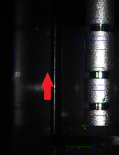 |
No |
|
D120 |
1. If Wash Wheel Dispense Volume or Residual Volume Calibration Fails to meet acceptance criteria not enough values were in the required range due to not finding the bottom of the vessel 2. Pass both Wash Wheel Dispense and Residual Volume Calibration, but WWS flags due to not finding the bottom of the vessel. |
Edge width from 10 to 17 |
10 |
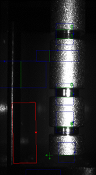 |
Implemented in SW 1.20 |
Sample Presentation Unit (SPU)
| Cell | Intended Use | Function | Default Value | Example | Being improved in future SW version? |
|---|---|---|---|---|---|
| A3 | RESET JOBFILE: Identifying version of Job File associated with the SW and resetting the Job File. | 1. Change cell
2. Reinitialize instrument (Job File will be deployed again) |
SW version 1.16=1.016 | 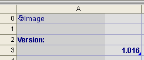 |
No |
| I2 | To change image brightness for tube detection. | 1. Set camera offline
2. Change cell (0.01 increments) 3. Save Job File 4. Set camera online |
0.75 | 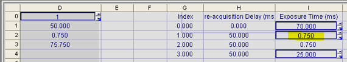 |
No |
| I33 | To change tube height edge finding threshold for tube detection. | 1. Set camera offline
2. Change cell until edge finder matches tube edge 3. Save Job File 4. Set camera online |
8 | 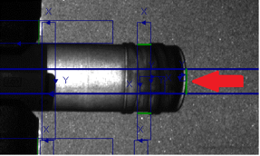 |
No |
| I36 | 15 | ||||
| J33 | To change tube height edge width for tube detection. | 1. Set camera offline
2. Change cell until edge finder matches tube edge 3. Save Job File 4. Set camera online |
2 | 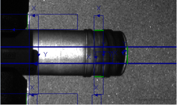 |
No |
| L32 | Reflector edge threshold, adjust for better detection of reflector edge. | 1. Set camera offline
2. Change cell until reflector edge detected 3. Save Job File 4. Set camera online |
5 | 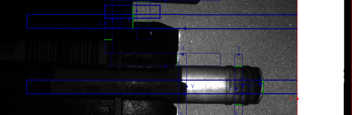 |
No |
| K38 | Detects top portion of reflector. | 1. Needed only when reflector has a defect
2. Set camera offline 3. Change cell until top of reflector detected 4. Save Job File 5. Set camera online |
8 | 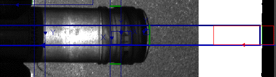 |
No |
| D82 | Adjust top of rack for tubes that are not commonly used. | 1. Set camera offline
2. Adjust cell from 125 to 115 or until top of rack detected 3. Save Job File 4. Set camera online |
125, may adjust to 115 to see top of rack detection | No | |
| K89 | Adjust for top of rack. Useful for tube/cup misidentifications. | 1. Set camera offline
2. Adjust cell (do not adjust past 10) 3. Save Job File 4. Set camera online |
8 | 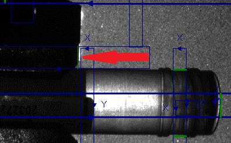 |
No |
Precision Sample Pipettor
| Cell | Intended Use | Function | Default Value | Example | Being improved in future SW version? |
|---|---|---|---|---|---|
| A2 | RESET JOBFILE: Identifying the version of the job file associated with the SW and resetting the job file. |
1. Change cell 2. Reinitialize instrument (Job File will be deployed again) |
SW 1.16=1.030 |
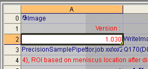 |
No |
|
F61 |
Tip Discard PatMax.
Note: For use with software version 1.15 and older.
|
See service manual for tip discard troubleshooting |
30 |
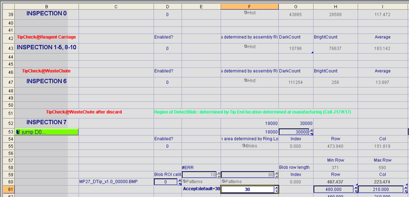 |
In software version 1.17.2 and later, the Precision Sample Pipettor Check of Tip Check camera calibration replaces the Precision Pipettor Tip Discard camera calibration. |
|
Y18 |
Detects tip ring. |
1. Set camera offline 2. Adjust cell down as far as 25 until tip ring is detected 3. Save Job File 4. Set camera online |
51 |
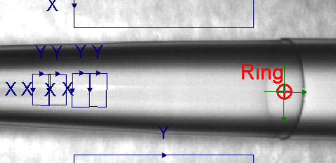 |
No |
Clean the inside and outside of camera cover if Tip Check calibration fails.
Aliquot Sample Pipettor
| Cell | Troubleshooting Use | Function | Default Value | Example | Being improved in future SW version? |
|---|---|---|---|---|---|
| A2 | RESET JOBFILE: Identifying the version of the job file associated with the SW and resetting the job file. |
1. Change cell 2. Reinitialize instrument (Job File will be deployed again) |
SW 1.16=1.008 |
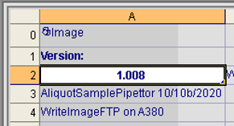 |
No |
|
F89 |
Tip Discard PatMax.
Note: For use with software version 1.15 and older.
|
See service manual for tip discard troubleshooting |
30 |
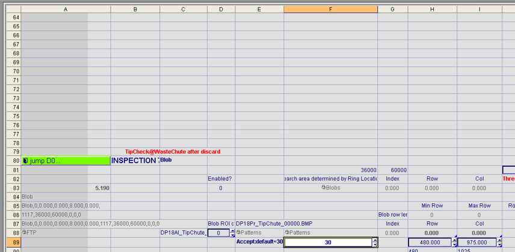 |
In software version 1.17.2 and later, the Aliquot Sample Pipettor Check of Tip Check camera calibration replaces the Aliquot Pipettor Tip Discard camera calibration. |